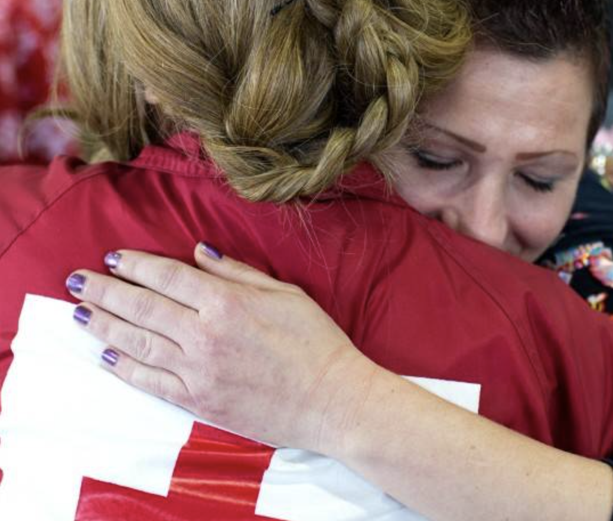
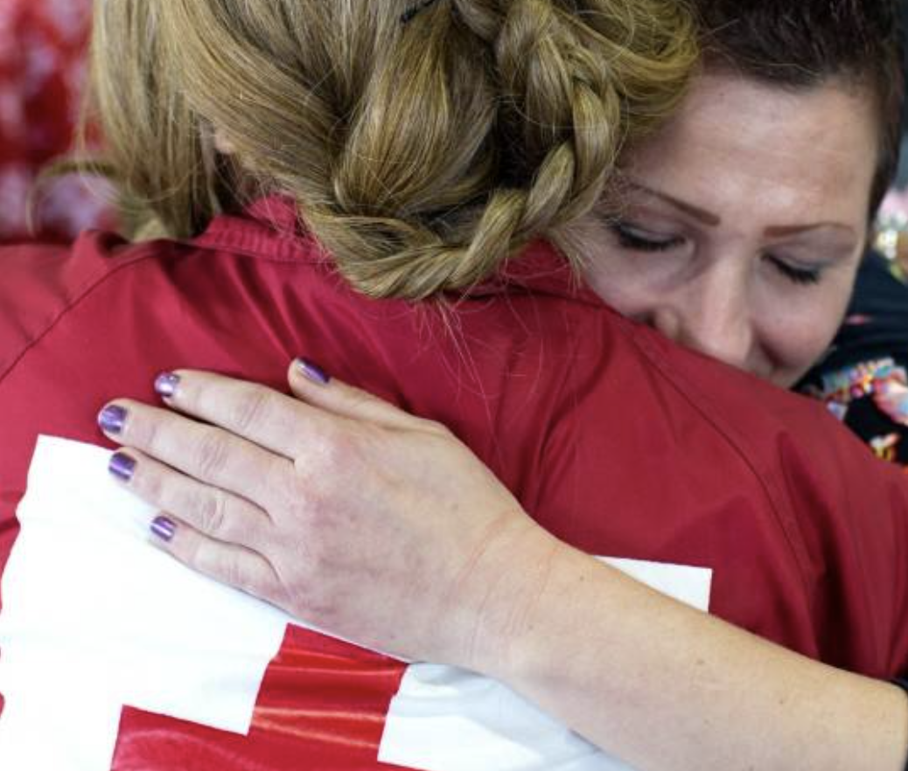
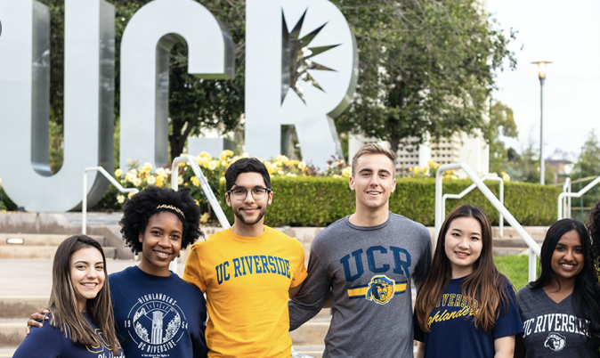
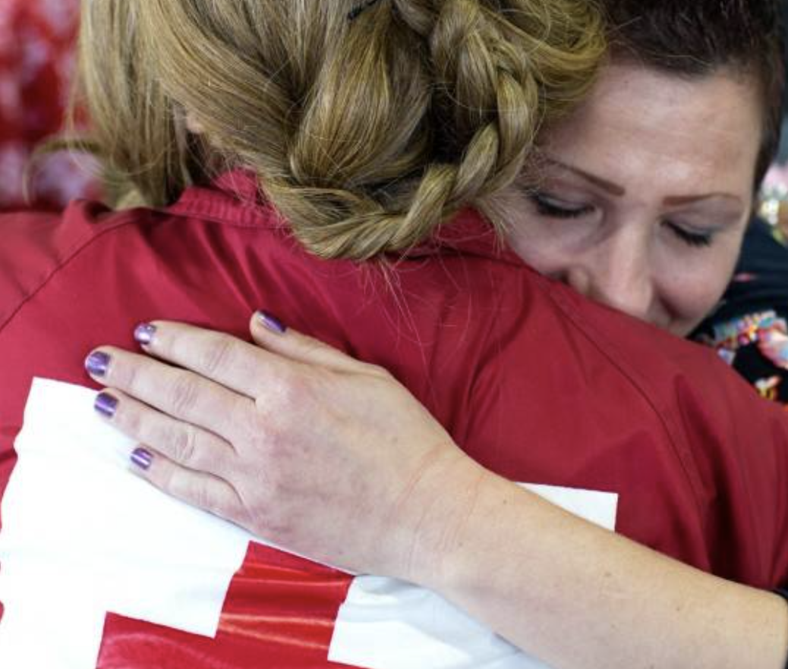
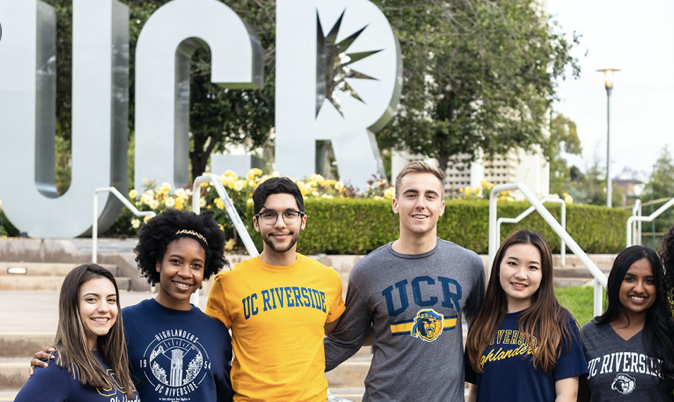

Vanessa Contreras
I am currently a full time first year student, attending University of California, Riverside. I was raised in Northern California and throughout my years of adolescence I was immersed in the diverse culture of my everyday community.
As someone who was constantly searching to connect with others and better the community, I became involved in various leaderships that allowed me to partake in global service trips and am currently involved with Red Cross in UC Riverside. I most recently traveled to Costa Rica in order to service a small town. My bilingual skills helped me make strong connections and be extremely helpful in communicating the logistics of the environmental struggles the small town of two hundred people had been experiencing. The impact I made in that community helped me get a mere glimpse in what I will be capable of in my new career.
I am striving to work for a career where I can help people of different backgrounds in my everyday work. Along with a strong community service background, I have also worked in part time jobs in order to focus and pay for my college endeavors. I have learned the values and observation skills throughout interacting and creating strong client relationships with each job, which will help me throughout upcoming internships and careers.
With the factors of COVID-19, my first year on campus was cut short, but allowed me to begin flourishing in various clubs at UCR. Although I am an only a first year student, I have begun to write my own proposals for research, particularly with the help of Professor Simmers with her expertise in Criminology.
I believe my persistence and pre-existing skills will allow me to fit and adapt to this work environment, and will allow me to work on the needs of your organization. I would appreciate the opportunity to meet with those interested and my contact information is included for any further questions.
Experience
Community and Glabal Leader
• Helped organize community service projects withing community
• Volunteered in communities abroad
• Experience with HTML, CSS, Javascript, Photoshop
Cashier
• Responsible for checking in customers
• Responsible for creating reservations along with hostessing large company meetings
Childcare Advisor
• Ran turoring sessions
• Responsible for many children and trusted by parents
Education
UC Riverside
Portfolio
 




